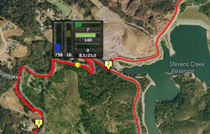

Using the Map View
Ascent's detailed map view is really a general purpose map display window that can also plot your activity path and lap markers. Additionally, the map display can show a transparent "heads-up" graphic containing data values corresponding to the current animation location.
